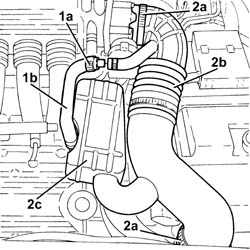
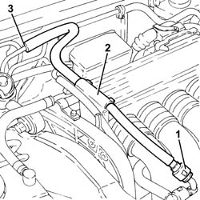
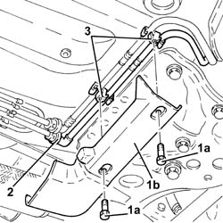
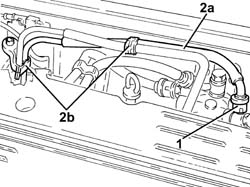

1040B32 front fuel delivery line - r r
- Path
- Procedures > 10 ENGINE > 1040 FUEL TANK AND PIPES > 1040B fuel supply/return circuit pipe > 1040B32 front fuel delivery line - r r
- Kind
- repair procedure (removal / refitting; the operation number is the code)
- Applies to
- engines: 3.2 V6, 1.9 JTD 16V; all production periods
- Interactive page
- https://sloeber94.github.io/elrnDB-a147/en/#/3024971
Applies to: engines: 3.2 V6; all production periods
 Removing
Removing
 Refitting
Refitting1. Loosen the band (1a) and disconnect the oil vapour recirculation pipe (1b) from the corrugated hose.
2. Loosen the bands (2a) and remove the corrugated hose (2b), complete with resonator (2c).

Applies to: engines: 3.2 V6; all production periods
Discharge the fuel system pressure with the tool connected to the bleed valves on the fuel pipe.
 | Name | Country |
|---|---|---|
- | Rapid connector | 1.870.684.000 |
1. Disconnect the quick-release connector for the front fuel supply pipe, fuel manifold side.
2. Release the front fuel supply pipe from the support on the air chamber.
3. Release the seal for the front fuel supply pipe to the rear pipe and remove it.

Applies to: engines: 3.2 V6; all production periods
Refitting
RemovingPlace the front fuel supply pipe back in its housing and connect it to the rear fuel supply pipe.
Fasten the front fuel supply pipe to the support on the air chamber.
Connect the quick-release connector for the front fuel supply pipe, fuel manifold side.
Place the corrugated hose, complete with resonator, back in its housing and tighten the bands.
Connect the oil vapour recirculation pipe to the corrugated hose and tighten the band.
Applies to: engines: 1.9 JTD 16V; all production periods
Removing
RefittingPosition the vehicle on the ramp.
Proceed with removal 7025A12 Engine front sound insulation COVER - R.R. .
Proceed with removal 7025A14 Bonnet LID - R.R. .
Proceed with removal 1016A10 sound-proofing cover - r + r .
1. Undo bolts (1a) and remove protection (1b).
2. Disconnect the quick-release connector for the front fuel supply pipe , rear fuel supply pipe side.
3. Release the front fuel supply pipe from the fixings under the body.

Applies to: engines: 1.9 JTD 16V; all production periods
1. Disconnect the quick-release connector for the front fuel supply pipe , fuel filter side.
2. Release the front fuel supply pipe (2a) from the remaining fastenings (2b) on the engine bulkhead and remove it.

Applies to: engines: 1.9 JTD 16V; all production periods
Refitting
RemovingPlace the front fuel supply pipe back in its housing and fix it on the engine bulkhead using the bands.
Connect the quick-release connector for the front fuel supply pipe, fuel filter side.
Fix the front fuel supply pipe to the underbody fixings.
Connect the quick-release connector for the front fuel supply pipe, rear fuel supply pipe side.
Place the protection back in its housing and secure it using the bolt.
Proceed with refitting 1016A10 sound-proofing cover - r + r .
Proceed with refitting 7025A14 Bonnet LID - R.R. .
Proceed with refitting 7025A12 Engine front sound insulation COVER - R.R. .
Remove the car from the ramps.